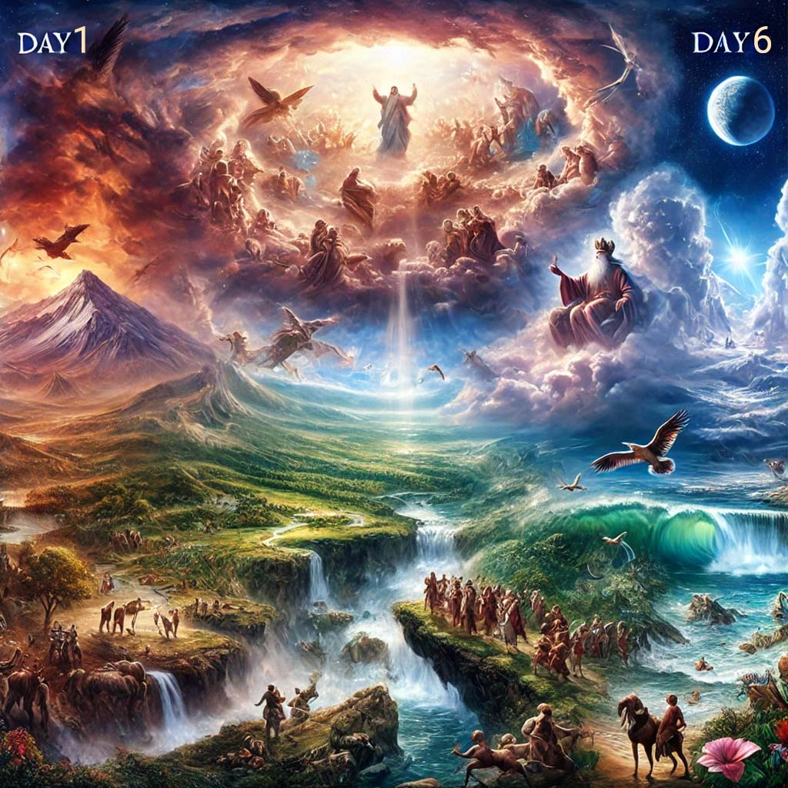
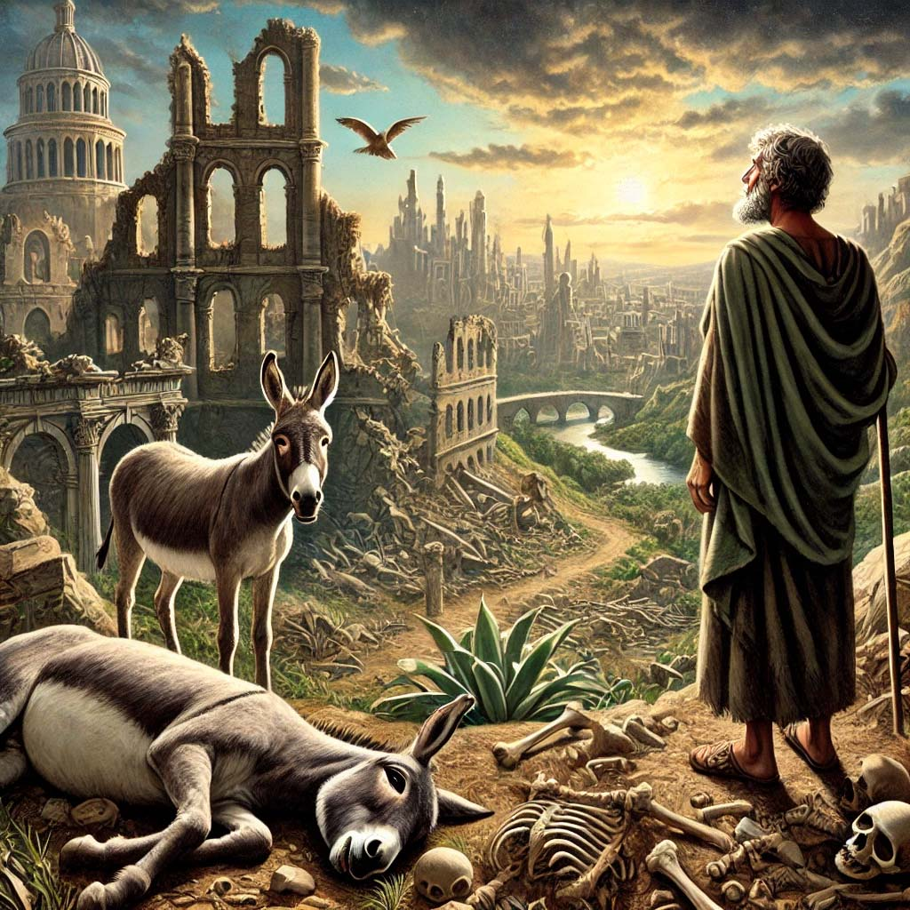
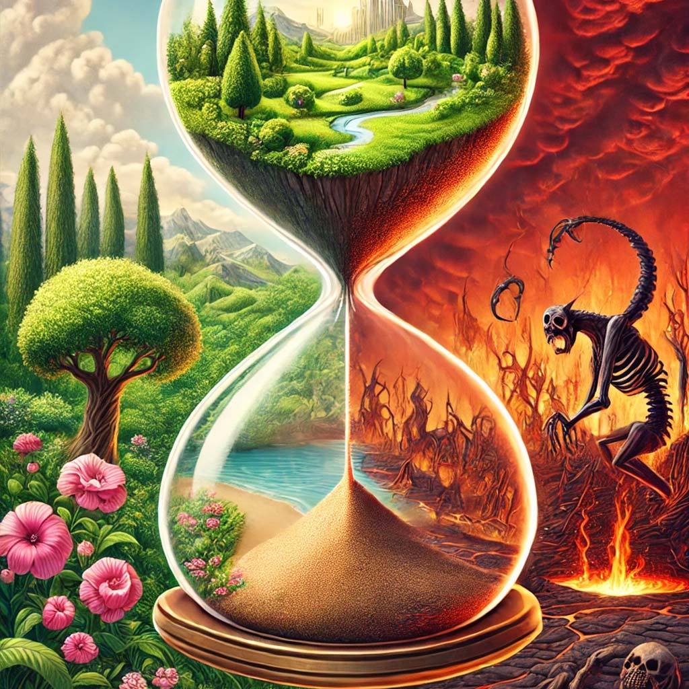

روز
ما که میگیم یه روز منظورمون یک بازۀ زمانی مشخصه (شبانه روز) که یه ابتدا (صبح) و یه انتها داره (شب).
وقتی یه سریال در حال فیلم برداریه، کارگردان صحنه های مشابه رو همزمان تصویر میگیره. مثلا ممکنه توی یک روز، سکانس هایی از قسمت اول، وسط و آخر بصورت همزمان ضبط بشه. در این شرایط، بیان امروز، دیروز یا فردا، چالش انگیزه در خلال دیالوگها.
مثال
وقتی خدا (کارگردان) به فرعون (نقش منفی) میگه امروز (الیوم) بدنت رو نجات میدیم، از اون امروز که دیروز گفته، منظورش یه جاست تو فردا. بازۀ زمانیِ اون روز (یوم) چقدره؟ ابتداش میشه زمان کشف جسد فرعون، انتهاش میشه زمان قیامت یا تا هر وقت اون مومیایی بمونه تو موزه.
فَالْيَوْمَ نُنَجِّيكَ بِبَدَنِكَ لِتَكُونَ لِمَنْ خَلْفَكَ آيَةً وَإِنَّ كَثِيرًا مِنَ النَّاسِ عَنْ آيَاتِنَا لَغَافِلُونَ
از طرف دیگه، ممکنه تو فیلمنامه ظاهرا سالها از عمر یک بازیگر بگذره، اما عملا 1 روز بیشتر در خلال ایفای اون نقش از عمرش نگذشته. پس تعریف یک روز (یوم) برای هر سناریو و مکان، میتونه متفاوت باشه از نظر بازۀ زمان.
إِنَّ يَوْمًا عِنْدَ رَبِّكَ كَأَلْفِ سَنَةٍ مِمَّا تَعُدُّونَ
-
سوالات
-
1. وقتی خدا میگه آسمونا و زمینو تو شش روز (یوم) خلق کردم، یعنی مثلا از شنبه تا پنجشنبه کار و جمعه استراحت؟ آیا هر یوم تو آسمون (روز) دقیقا معادل 1000 ساله تو زمین؟ یا هر یوم یه بازۀ زمانی مشخصه در آسمون (روز)، نامشخص یا نامساوی برای ما در زمین؟
خَلَقَ السَّمَاوَاتِ وَالْأَرْضَ فِي سِتَّةِ أَيَّامٍ
خلق کرد آسمانها و زمین را در شش ایامی 7:54 -
2. وقتی میگیم روز قیامت یعنی یه روز از صبح تا شب، همه جمع میشیم تو 24 ساعت؟ یا اون روز (یوم) یک بازۀ زمانی نامشخصه، که برای آسمونیا یک روز و به سال زمینی هزاران سال طول میکشه؟ اونوقت ما هنوز زمینی محسوب میشیم که 1000 سال برامون بگذره؟ یا دیگه آسمونی شدیم و قیامت همون یک روزه برامون؟
مَالِكِ يَوْمِ الدِّينِ
مالک روز جزا 1:4 -
3. آیا ممکنه یه آدم زمینی هم در شرایطی گذر زمان رو به شیوۀ آسمونیا تجربه کنه؟ مثلا 100 سالِ تقویم زمین، براش اندازۀ 1 روز یا کمتر بگذره؟ مثل کسی که سالها تو کُما رفته باشه، یا دقایقی تجربۀ نزدیک مرگ (NDE) داشته باشه؟
فَأَمَاتَهُ اللَّهُ مِائَةَ عَامٍ ثُمَّ بَعَثَهُ قَالَ كَمْ لَبِثْتَ قَالَ لَبِثْتُ يَوْمًا أَوْ بَعْضَ يَوْمٍ
پس میراندش خدا صد سالی، سپس برانگیختش. گفت: چقدر درنگ کردی. گفت: درنگ کردم روزی، یا بعض روزی 2:259 -
4. آیا ممکنه روزی (یوم) بیاد که در همون یک روز (بازۀ زمانی) برای ابد زندگی کنیم؟ اگه زیبا باشه اون روزمون، بدون ترس از بازگشت خاطرات بد دیروز، بدون نگرانی از تمام شدن اون روز خوب؟ اگه زشت باشه اون روزمون، بدون امکان رهایی از خاطرات بد دیروز؛ بدون امید به تمام شدن اون روز بد؟
قَالَ اللَّهُ هَـٰذَا يَوْمُ يَنْفَعُ الصَّادِقِينَ صِدْقُهُمْ لَهُمْ جَنَّاتٌ تَجْرِي مِنْ تَحْتِهَا الْأَنْهَارُ خَالِدِينَ فِيهَا أَبَدًا رَضِيَ اللَّهُ عَنْهُمْ وَرَضُوا عَنْهُ ذَٰلِكَ الْفَوْزُ الْعَظِيمُ
گفت خدا: این روز نفع میرساند صادقان را صدقشان، برایشان جنّاتی جاری از زیرش نهر ها؛ جاودانان در آن ابدی، راضی بود خدا از آنها و راضی بودند از او. آنست جَستنِ عظیم 5:119 -
5. آیا عادلانه هست یکی بخاطر 100 سال ثواب یا گناه تو این دنیا، تشویق یا عذاب بشه با یک روزِ بینهایتِ بهشت یا جهنم در اون دنیا؟ آیا عادلانه هست یک نفر بخاطر خواب بودن وجدانش، با دستور غیرمستقیم یا مستقیمِ خودش (بمب، اعدام) صدها خانواده رو داغدار کنه؟
آیا نا عادلانه هست بخاطر این عمل در این دنیا، اون نفر در اون دنیا با زور عدل خدا وجدانش بیدار بشه و در عواقب عمل خودش تا ابد (عذاب وجدان) گرفتار بشه؟ یا برعکس، کسی که عامل شادی و برکت آدما و خانواده ها بوده، با اعمال زیباش در دو روزِ دنیاش؟
فَالْيَوْمَ لَا تُظْلَمُ نَفْسٌ شَيْئًا وَلَا تُجْزَوْنَ إِلَّا مَا كُنْتُمْ تَعْمَلُونَ
پس امروز (روز ابدی) ظلم نمیشود کسی چیزی؛ و جزا نمی شوید، مگر آنچه عمل میکردید 36:54 -
6. آیا ممکنه همۀ این سالهای عمر ما که گاها خیلی سخت میگذره، یه روز بیاد بفهمیم از یه روز هم کمتره؟ همونطور که وقتی از خواب شب بیدار میشیم، بعد ساعتها کابوس یا رویا، همش تو چند دقیقه مرور میشه از سرمون میپره، هر چند وقتی خوابیم قدر یه عمر طولانی بوده!

قَالَ كَمْ لَبِثْتُمْ فِي الْأَرْضِ عَدَدَ سِنِينَ؛ قَالُوا لَبِثْنَا يَوْمًا أَوْ بَعْضَ يَوْمٍ
گفت: چقدر درنگ کردید در زمین، به عدد سالها؛ گفتند: درنگ کردیم روزی، یا بعض روزی 23:112 -
7. آیا مدیریت ما زمینیا به دست آسمونی خدا، مثل یه کشاورزه که بذر آدم رو از آسمون ریخته زمین، منتظر رشد و تعالی بشره، تا نهایتا محصولات خوبِ زمینش رو بچینه، آفات و علف هاش رو شُخم بزنه (قیامت) تا مجدد زمین و زمان آماده بشه واسه تولیدات بعدی خدا، بر مبنای محصولات امروز ما (یوم)؟
يُدَبِّرُ الْأَمْرَ مِنَ السَّمَاءِ إِلَى الْأَرْضِ ثُمَّ يَعْرُجُ إِلَيْهِ فِي يَوْمٍ كَانَ مِقْدَارُهُ أَلْفَ سَنَةٍ مِمَّا تَعُدُّونَ
تدبیر میکند امر را از آسمان بر زمین، سپس عروج میدهد بر او در روزیکه هست مقدارش هزار سالی از آنچه عدد میکنید 32:5